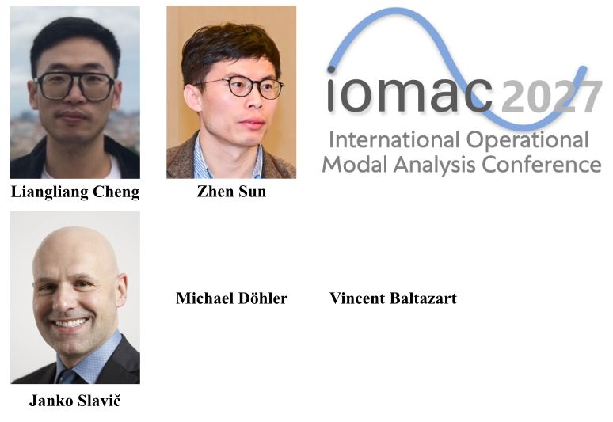

June 2026
Our team contributes to IOMAC 2027, France
Our team contributes to the International Operational Modal Analysis Conference (IOMAC 2027), with Dr. Liangliang Cheng serving as one of the organizers and special track chairs for Special Track 13: Vision-based Techniques for Vibration Assessment and Monitoring.
The special track will highlight recent advances in computer vision and optical sensing for structural dynamics, including digital image correlation, motion magnification, and UAV-based photogrammetry. These techniques enable dense, non-contact vibration measurement and damage detection for bridges, buildings, wind turbines, and other engineering structures.
The track reflects the growing role of vision-based and optical measurement methods in operational modal analysis, structural health monitoring, and non-destructive testing, offering scalable alternatives to traditional instrumentation.
The special track chairs are Michael Döhler from Inria, Liangliang Cheng from the University of Groningen, Zhen Sun from Southeast University, Vincent Baltazart from Université Gustave Eiffel, and Janko Slavič from the University of Ljubljana.
